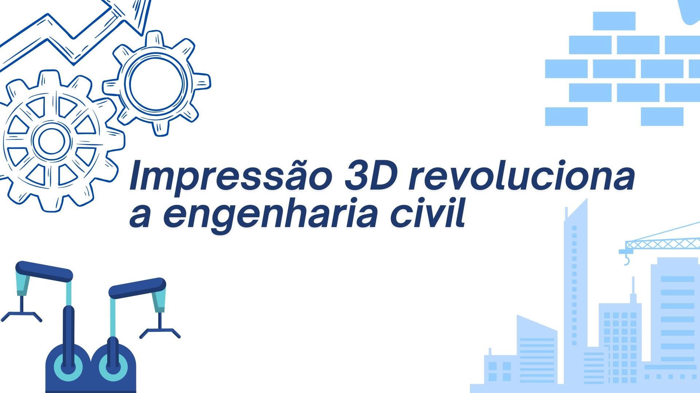

Engenharia sustentável ganha força em grandes cidades
Projetos de construção sustentável estão se tornando prioridade em metrópoles brasileiras. Arquitetos e
engenheiros têm investido em materiais recicláveis, sistemas de captação de água da chuva e energia solar para
reduzir o impacto ambiental das obras. Essa mudança de paradigma reflete um compromisso crescente do setor
com práticas responsáveis e inovação em prol do meio ambiente.
Impressão 3D revoluciona a engenharia civil
A impressão 3D está transformando o modo como casas e estruturas são construídas. Empresas de engenharia
têm usado a tecnologia para produzir componentes com mais rapidez e menor custo, reduzindo desperdícios e
o tempo de execução das obras. Especialistas acreditam que, em poucos anos, será comum ver construções
inteiras sendo erguidas com impressoras 3D, marcando um novo capítulo na história da engenharia moderna.
